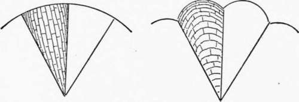
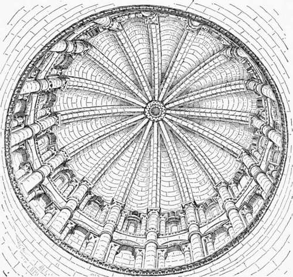
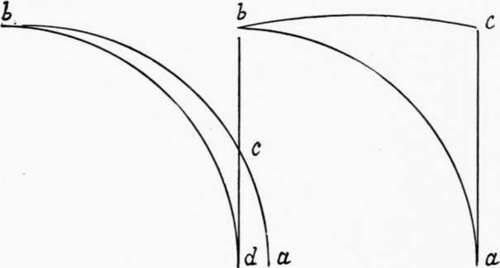
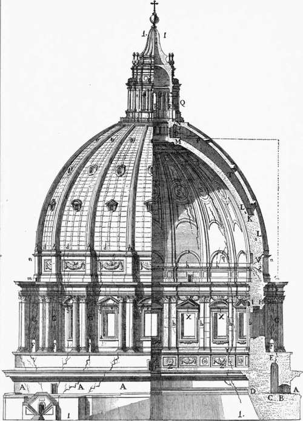

The Dome Of St. Peter's. Part 4
Description
This section is from the book "Character Of Renaissance Architecture", by Charles Herbert Moore. Also available from Amazon: Character of Renaissance Architecture.
The Dome Of St. Peter's. Part 4
This vast dome is an imposing object, but it is nevertheless a monument of structural error. Not only does its form and construction render it much less secure than Brunelleschi's dome, but its supporting drum is entirely unsuited to its function, save as to its strength to bear the mere crushing weight of the vault. In replacing the continuous colonnade, with its abutting load, of Bramante's drum by the isolated buttresses, Michael Angelo ignored the true principle of resistance to the continuous thrusts of a dome. It has been thought that the rib system justifies this, that the ribs gather the thrusts upon the buttresses and give the dome a somewhat Gothic character. But this cannot be so. It is impossible for a dome to have any Gothic character. In addition to what has been already said (p. 20) on this point, it may be further remarked that, so long as the surfaces between the ribs remain straight on plan, as in the dome of Florence, or are segments of a hemisphere, or of a dome of pointed form on a circular base, like the dome of St. Peter's, no ribs can be made to act in a Gothic way. A circular vault on Gothic principles would necessarily be a celled vault, more or less like the small vault of the Pazzi already described (p. 27). In such a vault there would have to be an arch (in a true Gothic vault a much stilted arch) in the circumference of the drum over the space between each pair of ribs. The crowns of these arches would reach to a considerable height, in a developed Gothic vault to nearly or quite the height of the crown of the vault itself. The triangular spaces enclosed by these arches and converging ribs would then be vaulted over by slightly arched courses of masonry running lengthwise of the triangle, or from the arches to the ribs, and approximately parallel with the crown of the cell (A, Fig. 27). Thus in place of an unbroken hemispherical or oval vault, we should have one consisting of deep cells. The drum would have to rise far above the springing, and the haunches would need to be loaded with a solid filling of masonry. The vault would thus be completely hidden from view on the outside. Nothing short of this would produce a circular vault on Gothic principles, or one in which the ribs could act in a Gothic way.1 The nearest approach to such a form, in a vault that may with any propriety be called a dome, occurs over the crossing of nave and transept in the old cathedral of Salamanca in Spain (Fig. 28).2 But this vault has a very different character from the imaginary one just described. It rises from the top of a high drum resting on pendentives, and is built on a system of salient converging ribs. The spaces between these ribs are vaulted over with courses of masonry slightly arched from rib to rib, and thus running in a direction perpendicular to that of the courses in a Gothic vault cell, as in B, Figure 27. A series of hollowed gores are thus formed which give a scalloped instead of a plain circular plan to the vault as a whole. But such a vault differs fundamentally from a Gothic vault. For the line of the crown of each cell is the steep segmental curve ab in A, Figure 29. In other words, the vault as a whole is a hemisphere with its surface broken into shallow hollows like the gores of a melon. It is obvious that in a vault with cells so shaped the thrusts are as great at all points in the circumference as they are in a simple hemispherical dome, and that such a vault can have no Gothic character. To develop this into any real likeness to a Gothic vault, it would be necessary to reduce it to an unbroken circular plan by cutting off the scallops at its base so that it would fit into the circular drum, upon the inner surface of which it would now intersect in series of small arches, one for each hollowed gore, with its springing at the point d and its crown at the point c. Then these arches would have to be raised by stilting and pointing until their crowns were brought up to the level, or near the level, of the point b as in B of the same figure. Thus the line dc, which represents the height of the arches in the first stage of this development, becomes the line ac in the second stage. So long as the chord of the arc be is a steeply inclined line, the vaulting cells cannot bear upon the ribs, nor can the thrusts of the vault be concentrated in a Gothic way.
1 Michael Angelo's remark, quoted by Fontana (Tempio Vaticano, vol. 2, p. 315) " Imitando 1' antico del Pantheon, e la moderna di Santa Maria del Fiore, corresse i difetti dell' uno, e dell' altro," shows that he regarded as a defect the lowness of the Pantheon dome, which in point of construction is its capital merit, and that what he proposed to correct in the dome of Florence was its octagonal form, which is essential to its peculiar structural system.
A
Fig. 27.
B
Fig. 28. — Interior of dome of Salamanca.
1 A consistent exterior for such a vault would not, of course, be an unbroken drum, though a perfectly Gothic circular vault might be thus enclosed within a drum. A consistent external form would require salient buttresses against the lines of thrust, and the intervals between these buttresses would be open, as in a Gothic apse.
2 The outside of this vault is figured in my Development and Character of Gothic Architecture, 2d edition, New York and London, The Macmillan Co., 1900, p. 287.
A Fig. 29. B
The vault of Salamanca is not a Gothic vault in any sense, though its rib system and its hollowed cells conform with the earliest stage of apsidal vault development leading to Gothic.1 It is a dome, and like the larger dome of St. Peter's, it is sprung from the top of the drum; but unlike St. Peter's dome, it is powerfully abutted by turrets and dormers built against its springing and its haunch, and it is loaded at the crown with a cone of masonry, so that from without it looks like a stumpy spire, and not like a dome.2
But Michael Angelo's vault has not even such remote approach to Gothic character as the small dome of Salamanca has. Its surface is unbroken by any hollowing into cells. It is a perfect circle on plan, and its ribs, which are embedded and not salient on the inside, cannot, therefore, sustain the vault in any Gothic way. This dome has, moreover, so much of a spherical shape as to give it a stronger tendency to thrust than the dome of Florence has, and the thrusts are exerted equally on all points in the circumference of the drum. The isolated buttresses are therefore illogical, and being set against the drum only, and not even reaching to the top of the drum, they are ineffectual. Thus though the dome was bound with two iron chains, one placed near the springing, and the other at about half the vertical height of the vault,3 it began to yield apparently soon after its completion. Fissures opened in various parts of both dome and drum which at length caused such apprehensions of danger, that Pope Innocent XI called a council of the most able engineers and architects of the time4 to examine into the extent of the damage, and ascertain whether serious danger existed. This council concluded that the cupola was in no danger of disintegration, and the Pope, in order to restore confidence in its safety, charged Carlo Fontana, the architect, to write a book on the building and prove the groundlessness of any fears of its collapse. Thus the matter appears for the time to have been dropped. But subsequently the condition of the structure became so alarming that three eminent mathematicians, among whom was the celebrated Boscovich, were, in the year 1742, commissioned by Pope Benedict XIV to make a further examination and submit a report with recommendations for its consolidation.
1 Cf. my Development and Character of Gothic Architecture, p. 70 et seq.
2 The turrets, built upon the supporting piers of the interior, give the outside of the drum the aspect of a massive lantern.
3 Cf. Poleni, Memorie Istoriche delle Gran Cupola del Tempio Vaticano, e de1 Danni di essa, e de' A'istoramenti loro (Padua, 1768), p. 29.
4 Milizia, op. cit., vol. 2, p. 325.
The condition of the fabric at the time of this examination will be understood from Figure 30, a reproduction of the illustration subjoined to the mathematicians' report.1 They found the structure, as the illustration shows, rent into numerous fissures, some of which were large enough to allow a man's arm to be thrust through them. In some places these cracks had been filled up with brick and cement, and new ones had opened in the filling.2 At what time the ruptures had commenced could not be definitely ascertained, but the mathematicians express the opinion, for which they state their reasons, that they may have started very soon after the completion of the work.3 That they were not due to any weakness in the substructure was shown by the fact that this remained apparently quite firm. Had the fractures been caused by any weakness in the piers or pendentives, the mathematicians say,4 they would be wide at the base of the drum, whereas they were found (as shown in the illustration) to be small at the base and to increase in magnitude toward the top of the drum, and in the region of the haunch of the dome. This was thought by them to show that they were clearly due to weakness resulting from the form of the structure. The report states6 that the weight of the lantern had caused the heads of the great ribs to sink, the dome to expand at the haunch and at the springing, and the wall of the drum to be pressed outward at the top. To consolidate the fabric they recommended that additional chains be placed at various levels, the old ones having, they thought,6 burst asunder by the force of the thrusts ; but this could not be verified because they are embedded in the masonry. They also recommended clamps of iron to hold in the buttresses.
The Marquis Poleni of Padua, a distinguished engineer of safe as the general tenor of his book would lead us to believe. And the same misgivings are betrayed in what is said by the numerous other writers whose opinions are cited by him, though like himself they write for the most part with a manifest bias in favour of Michael Angelo. Thus one of these writers proposes that the outer covering of lead should be stripped off on account of its weight, and be replaced with copper, to which Poleni objects,1 affirming that the weight is an advantage, and tends to hold the dome together. Another writer suggests that the lantern be removed in order to relieve the fabric of its weight. Another thinks that the buttresses should be heavily weighted with statues. It was also proposed that additional buttresses should be set against the attic of the drum, and carried up against the dome itself; and again it was proposed that massive abutments be built up over each of the four great piers, but to this it was objected that the additional weight of such abutments would dangerously overcharge the substructure. The most radical suggestion was that both dome and drum be demolished and rebuilt in a more pointed form. All of these suggestions were rejected, and it was finally decided to employ the additional chains proposed by Poleni as already stated.
1 Parere di tre Mathematici sopra i danni die si sono trovato nella cupola di S. Pietro sul fine dell' Anno MDCCXIJI. Dato per Ordine di nostro Signore Papa Benedetto XIV, Rome, 1742. 2 See Appendix.
3 " t'ominciato forsi poco dopo terminata la fabrica." Op. cit., p. 13.
4 Ibid., p. 14. 6 Ibid., p. 15. 6 Ibid., p. 19.
Cvpo La Dis Pietro
Fig. 30. — The dome with its ruptures.
Continue to: